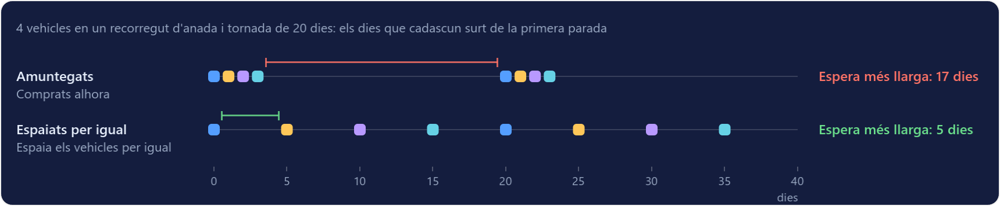

Línies
Vehicles que comparteixen parades, sumen els seus guanys i mantenen la distància.
Una línia és una ruta que comparteixen els teus vehicles. Les parades són de la línia, així que les canvies un cop i tots els seus vehicles et segueixen.
Crear una línia
- Obre un vehicle i prem Crea una línia sota les seves ordres. Tots els vehicles que fan les mateixes parades s'hi uneixen, siguin on siguin del recorregut.
- Posa-hi un altre vehicle amb Uneix-te a una línia a la finestra d'aquell vehicle. Pren les parades de la línia.
- Deixa la línia torna a treure un vehicle: conserva les parades com a pròpies.
- Clona en un vehicle d'una línia en compra un altre per a la mateixa línia.
- Les parades canviades a la finestra de qualsevol vehicle canvien tota la línia, i també una marca de Càrrega completa o Transbord.
La finestra de la línia
Fes clic al nom de la línia a la finestra d'un vehicle, o obre Línies a la barra superior (Ctrl+L). Dona a la línia un nom i un color propis: la seva ruta es dibuixa al mapa amb aquest color.
| Botó | Què fa |
|---|---|
| Afegeix vehicle | En compra un altre igual que el vehicle més nou de la línia. |
| Atura'ls tots | Atura tots els vehicles a la seva propera estació; torna a prémer per engegar-los. |
| Renova els vells | Renova tots els vehicles que han superat la seva vida útil. |
| Canvia tots els vehicles de la línia per un altre model. | |
| Fes clic dues vegades. Els vehicles continuen fent les mateixes parades, cadascun pel seu compte. |
La finestra també suma el que guanya la línia: els seus vehicles, el benefici d'aquest any i del passat, com de plens surten i el que costen de mantenir. Compara les teves línies per veure quines rutes són rendibles.
Espaiat uniforme
Els vehicles comprats alhora, o retinguts per una càrrega completa, tendeixen a amuntegar-se i arribar l'un darrere l'altre. Marca Espaia els vehicles per igual a la finestra de la línia:


- La línia cronometra un viatge d'anada i tornada i després el reparteix: amb 4 vehicles en un recorregut de 20 dies, en surt un de la primera parada cada 5 dies.
- Un vehicle que arriba massa aviat a la primera parada s'hi espera, i continua carregant mentre espera.
- Mai no espera més d'un interval, així que un vehicle lent no pot retenir la resta.